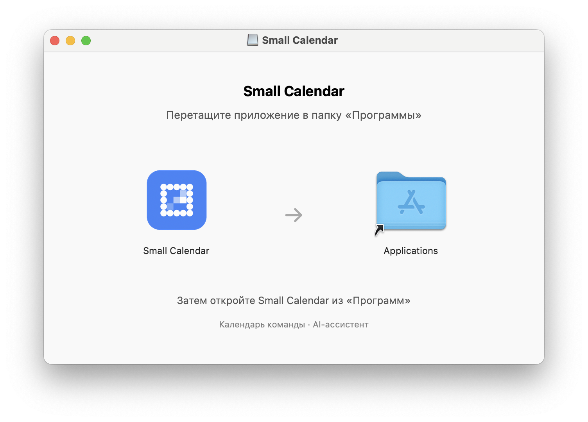
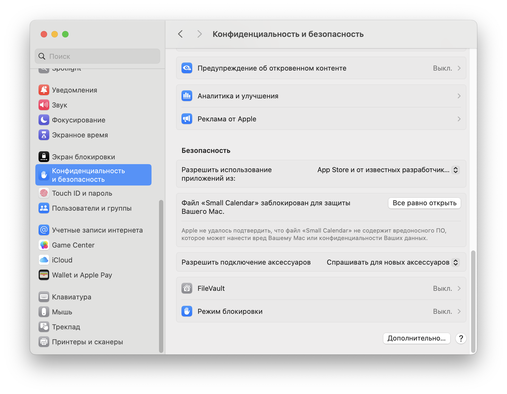
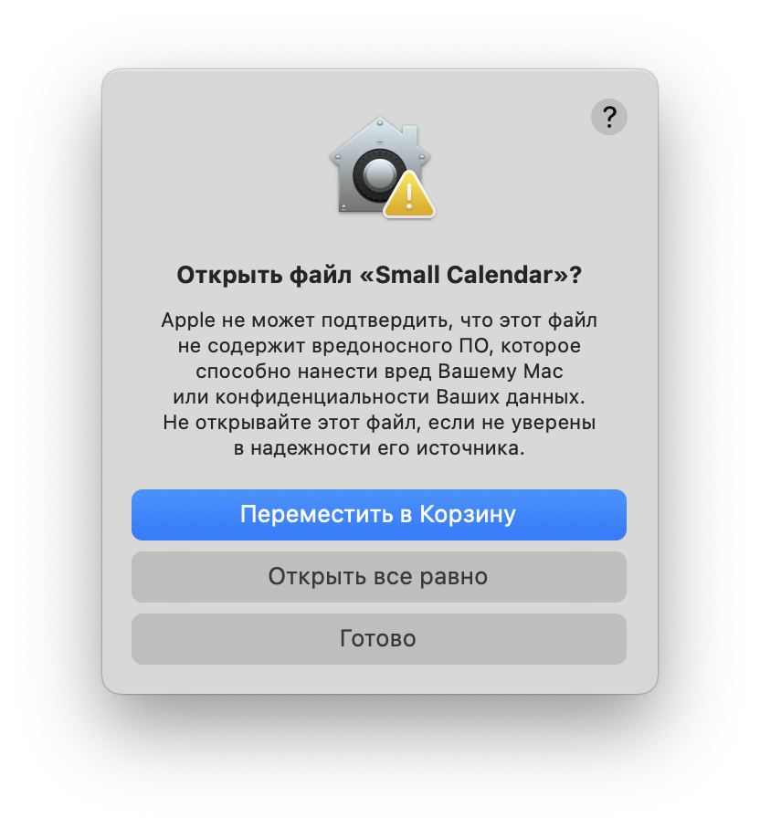

SMALL CALENDAR ДЛЯ macOS
От скачивания — до первой встречи
Установите календарь, войдите в рабочую учётную запись и подключите AI-ассистента. Пройдём каждый шаг вместе.
СКАЧИВАНИЕ
Скачайте установщик
Нажмите кнопку ниже. Файл .dmg сохранится в папку «Загрузки», если в браузере не выбрано другое место.
Скачать Small Calendar DMG · 135 МБСборка от 31 октября 2026 · Только для Mac с чипом Apple Silicon, не Intel.
Как узнать, какой у меня Mac?
Откройте меню Apple → «Об этом Mac». В строке «Чип» должно быть указано Apple M1, M2, M3, M4 или более новое поколение. Если указан процессор Intel, эта сборка не подойдёт.
УСТАНОВКА
Перетащите календарь в «Программы»
- Дважды нажмите на скачанный файл .dmg.
- В открывшемся окне перетащите значок Small Calendar на папку Applications («Программы»).
- Дождитесь окончания копирования. Откройте Finder → «Программы».
DMG — это образ диска: отдельно распаковывать его не нужно. Если календарь уже установлен, сначала закройте старую версию.

ПЕРВЫЙ ЗАПУСК
Откройте Small Calendar
В папке «Программы» дважды нажмите Small Calendar. macOS может показать предупреждение, что Apple не удалось проверить приложение.
«Small Calendar»
Первый запуск может быть заблокирован.
Схема · формулировка зависит от версии macOSЗакройте предупреждение кнопкой «Готово» или «ОК» и перейдите к следующему шагу. Не выбирайте «Переместить в Корзину».
РАЗРЕШЕНИЕ macOS
Разрешите открытие приложения
- Откройте указанный раздел и прокрутите вниз до блока «Безопасность».
- Найдите сообщение о блокировке Small Calendar и нажмите «Все равно открыть».

- В следующем окне подтвердите действие: «Открыть все равно» или «Открыть».
- Если macOS запросит подтверждение, используйте Touch ID или пароль администратора вашего Mac. Это не пароль Small.

Не вижу кнопку «Все равно открыть»
Ещё раз попробуйте открыть приложение из «Программ», затем вернитесь в настройки безопасности. На рабочем Mac разрешение может ограничиваться политикой организации — в таком случае обратитесь в ИТ-поддержку.
Если предупреждение прямо сообщает об обнаруженном вредоносном ПО или повреждении приложения, не обходите его — обратитесь в поддержку. Инструкция Apple ↗
Теперь подключим ваши сервисы
Small открывает доступ к календарю. LLM нужен для работы ассистента.
РАБОЧАЯ УЧЁТНАЯ ЗАПИСЬ
Войдите в Small
- В приложении нажмите «Войти в Small» на верхней плашке. Также можно открыть «Профиль Small» внизу левой панели.
- Введите рабочий логин и пароль от Team Small.
- Нажмите «Войти в Small» и дождитесь загрузки календаря.
Используйте рабочую учётную запись Team Small.
Появилось «Нет связи с Small»
Проверьте доступ к рабочей сети или VPN и нажмите «Повторить проверку». Если войти всё ещё не удаётся, проверьте свою учётную запись на team.small.kz или обратитесь в ИТ-поддержку.
AI-АССИСТЕНТ
Настройте модель и API-ключ
Заранее получите API-ключ и параметры модели у администратора LLM-сервиса. Пароль от Small и API-ключ модели — разные данные.
- В панели «Ассистент» нажмите значок ползунков «Настройки модели» в правом верхнем углу.
- Откройте вкладку LLM. Выберите профиль Small vLLM, DeepSeek или OpenAI Compatible. У каждого профиля отдельный API-ключ.
- Проверьте поля ниже и вставьте ваш API-ключ.
- Нажмите «Сохранить». Окно закроется, а сохранённый профиль станет активным. Для переключения между сохранёнными моделями нажмите название модели рядом с полем сообщения.
- Base URL
-
Адрес API сервиса. Для Small —
https://ai.skiftrade.kz/v1. Для другого провайдера используйте выданный им адрес. - Model ID
-
Точное имя доступной модели. В текущем профиле Small —
vllm/glm-5.3-flash. Уточните актуальное имя у администратора. - API-ключ
- Токен доступа к выбранному сервису. Не отправляйте его в чат. При смене Base URL необходимо ввести ключ для нового адреса.
Ассистент сообщает об ошибке
HTTP 401: проверьте ключ и его срок действия. HTTP 403: уточните права доступа. HTTP 404: проверьте Base URL и Model ID. При ошибке сети проверьте соединение и VPN.
МОДЕЛЬ РЕЧИ
Настройте Voice
В «Настройках модели» доступны две вкладки: LLM для модели ответов и Voice для распознавания речи. Голосовой ввод использует Whisper large-v3-turbo и не требует API-ключа.
- Откройте вкладку Voice и нажмите «Скачать модель · 1,62 GB». Модель скачивается отдельно от приложения.
- Следите за процентами, объёмом, скоростью и оставшимся временем. Доступны пауза, продолжение и отмена. Дождитесь проверки и чипа «Модель готова».
- В поле «Источник звука» выберите микрофон. Нажмите «Проверить микрофон» и разрешите доступ в macOS. Уровень звука показывается индикатором; проверка автоматически закончится через 10 секунд.
Распознавание выполняется локально. После установки модели для диктовки интернет не нужен; для ответов ассистента нужен подключённый LLM-сервис.
Микрофон не работает или модель больше не нужна
Проверьте «Системные настройки» → «Конфиденциальность и безопасность» → «Микрофон» → Small Calendar. Если устройство отключено, подключите его или выберите другой источник. Кнопка «Удалить модель» освобождает место; для следующей диктовки модель потребуется скачать снова.
РАБОТА С АССИСТЕНТОМ
Как пользоваться голосовым вводом
- После появления «Модель готова» закройте настройки. Рядом с отправкой сообщения появится кнопка микрофона.
- Поставьте курсор в поле сообщения и нажмите микрофон. В режиме «Слушаю» надиктуйте запрос по-русски, например: «Покажи мои встречи на завтра».
- Нажмите кнопку с квадратом, чтобы закончить запись. Дождитесь распознавания: текст вставится в позицию курсора или заменит выделенный фрагмент.
- Проверьте имена, даты и время, исправьте текст и нажмите отправку. Диктовка сама сообщение не отправляет.
Всё готово к работе
Календарь подключён, модель настроена. Начните с просмотра расписания на сегодня.
ИСТОРИЯ ИЗМЕНЕНИЙ
Changelog
0.1.0 · актуальная локальная сборка
· macOS · Apple Silicon
- Добавлено
-
- Голосовой ввод на русском. Whisper large-v3-turbo распознаёт речь на Mac. Модель скачивается отдельно с прогрессом, паузой, продолжением и проверкой готовности. Доступны выбор и проверка микрофона.
- Профиль DeepSeek. Его можно настроить рядом со Small vLLM и OpenAI Compatible; ключи профилей хранятся отдельно.
- Справка внутри приложения. Инструкции, иллюстрации и примеры запросов доступны рядом с профилем. Пример подставляется в черновик для проверки перед отправкой.
- Шаблон поиска по организатору. В стартовые запросы добавлен пример поиска событий за месяц.
- Изменено
-
- Настройки модели разделены на LLM и Voice. LLM содержит параметры сервиса и API-ключ; Voice — модель распознавания и источник звука. Голосовой ввод перенесён из настроек AI-помощника.
- Быстрое переключение LLM. Нажатие на название модели рядом с сообщением открывает меню сохранённых моделей. Поддерживаются клавиатура и сохранение выбора.
- Диктовка заполняет черновик. После остановки текст вставляется в позицию курсора или заменяет выделение. Отправка выполняется отдельно, отмена доступна по крестику и Escape. Лимит записи — 120 секунд.
- Инструкция обновлена. Добавлены настройка LLM/Voice, проверка микрофона и пошаговое использование голосового ввода.
- Исправлено
- Повышена совместимость инструментов просмотра встреч и аналитики с OpenAI-совместимыми сервисами: схемы запросов передаются как объекты, при этом проверка входных данных сохраняется.
Этот список описывает актуальную локальную сборку. Ссылка «Скачать
Small Calendar» выше ведёт на ранее опубликованный snapshot
v0.1.0-snapshot.20261031.6dca9ca; перечисленные
обновления не добавляются в этот DMG автоматически.